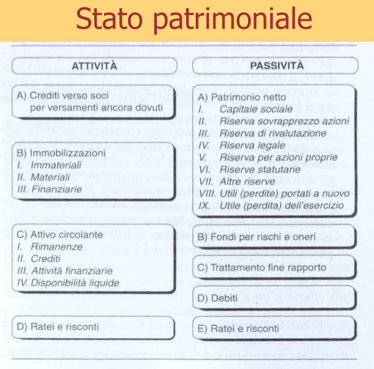

Comunicazione aziendale
Le imprese per poter sopravvivere deve saper comunicare sia all'interno che all'esterno.
La comunicazione interna
serve ad assumere decisioni strategiche e si rivolge agli organi di vertice (imprenditore / soci / amministratore delegato), ma anche ai quadri intermedi (dirigenti) e al personale esecutivo (impiegati / operai) per dare informazioni sulla direzione presa (da condividere, per avere una direzione unitaria e un'unità di intenti) e una visione condivisa degli obiettivi. Il prodotto, infatti, deve servire un target specifico che richiede un mix di prezzo, qualità, tipo di distribuzione e tipo di comunicazione concordato e indirizzato a quella clientela.
comuincazione esterna
Si divide in 3 tipi di comunicazione
Comunicazione economico - finanziaria
Si rivolge ai finanziatori ed è costituita, in particolare, dal bilancio, a sua volta costituito da Stato Patrimoniale (Beni e debiti) e dal Conto economico (Differenza tra ricavi e costi = utile).

Comunicazione socio - ambientale
Si rivolge alla collettività.
Informa sul contributo positivo dell'impresa in termini di occupazione, economia, ambiente.
Comunicazione di marketing
Si rivolge ai clienti per convincerli ad acquistare il prodotto.
Sistema informativo aziendale
È l'insieme dei dipendenti, del software, dei computer, che svolgono la funzione di raccogliere, memorizzare e analizzare i dati riguardanti l'azienda.
Cos'è un conto
Le operazioni di gestioni vanno memorizzate in scritture contabili come il conto.
Il conto misura le quantità iniziali e le variazioni successive di un determinato oggetto (come il denaro in cassa, le merci in magazzino, i debiti verso i fornitori ecc.
Il conto Denaro in cassa
Nelle 2 sezioni abbiamo:
Dare (sinistra): dove vanno le entrate (incassi in contante)
Avere (destra): dove vanno le uscite (esborsi in contante)
Il conto Banca c/c
Nelle 2 sezioni abbiamo:
Dare (sinistra): dove vanno gli aumenti di disponibilità (versamenti)
Avere (destra): dove vanno le diminuzioni di disponibilità (prelievi)
Abbiamo conti finanziari ed economici.
Conti finanziari
Esistono conti finanziari e conti economici.
Il conto Denaro in cassa e il conto Banca c/c sono finanziari. Riguardano strumenti di pagamento, come i conti accesi ai crediti e ai debiti. I valori di questi conti sono già espressi in moneta: 100 euro in Cassa, non hanno bisogno di essere valutati per essere espressi in moneta. Il denaro, inoltre, è un mezzo che serve ad acquistare un fattore produttivo, non è direttamente utilizzabile nella produzione, ma è uno strumento di scambio.
Caratteristiche dei conti finanziari:
- Non devono essere valutati
- Sono già espressi in valuta all'origine
- Sono strumenti di pagamento
- Non si impiegano direttamente nella produzione
- RIguardano denaro contante, disponibilità in banca, crediti e debiti
Esempi di conti finanziari:
- Denaro in cassa
- Banca c/c
- Crediti v/clienti
- Debiti v/fornitori
- Iva a ns credito
- Iva a ns debito
- Mutui passivi
| Conto finanziario |
| Dare | Avere |
Entrate
Crediti
| Uscite
Debiti |
Nelle due sezioni (Dare e Avere) si iscrivono i valori delle entrate (a sinistra) e delle uscite (a destra).
Per i conti accesi ai crediti, quando nasce un credito il suo valore viene scritto a sinistra. Quando si estingue il credito, il suo valore viene iscritto a destra.
Per i conti accesi ai debiti, quando sorge un debito, il suo valore viene iscritto a destra. Quando viene estinto si iscrive a destra.
Conti economici
I conti economici riguardano beni o servizi acquistati o venduti. Sono beni strumentali, devono essere valutati per stabilirne il loro valore in moneta. Le due sezioni funzionano in questo modo: rilevano i costi (acquisti) in dare e i ricavi in avere.
Esempi:
- Merci c/acquisti
- Prodotti c/vendite
- Automezzi
- Attrezzature
Caratteristiche
- Sono fattori produttivi acquistati o prodotti venduti
- Devono essere valutati per stabilirne il valore in moneta
- Funzionano a costi e ricavi